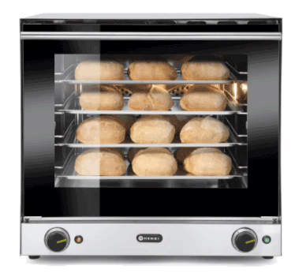
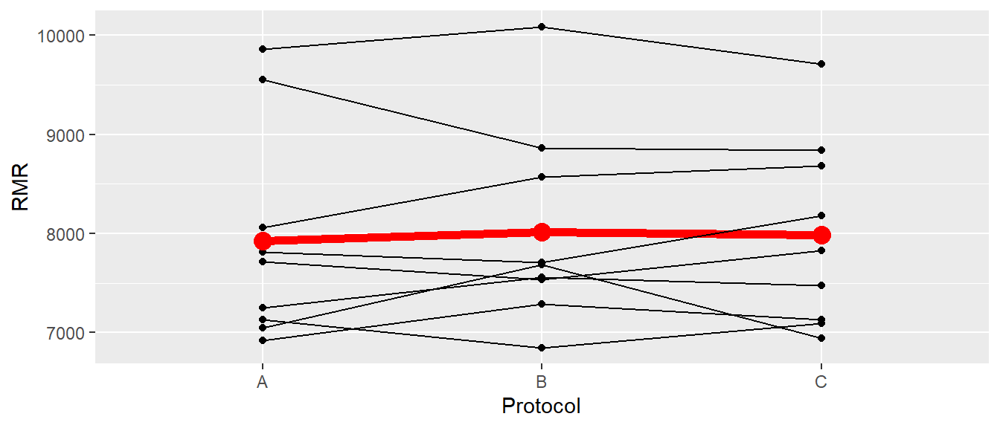

31 Block Designs
31.1 Completely randomized block designs
Nachdem wir CRD and die Verallgemeinerung die CRFD kennengelernt haben um den Einfluss von Variablen auf eine abhängige Variable für die wir uns interessieren zu untersuchen gab uns der Ansatz der ANCOVA eine Möglichkeit Varianz in der abhängigen Variablen mittels einer Kovariaten aus dem Modell rauszurechnen. Der Einfluss der Kovariaten ist für uns dabei per-se nicht von Interesse, sondern wir sehen die Kovariate vor allem als Möglichkeit an um Varianz zu kontrollieren. Diesen Ansatz werden in dem vorliegenden Kapitel weiter ausbauen und uns anschauen wie wir mittels sogenannter Blockfaktoren weitere Varianz aus der abhänigen Variable isolieren können. Dies hilft uns wieder dabei den Einfluss derjenigen unabhängigen Variablen für die wir uns primär interessieren genauer zu schätzen.
Fangen wir mit einem Beispiel an, das zunächst einmal nichts mit sportlicher Leistung zu tun hat. In einem Experiment wollen wir vier verschiedene Backmischung für Brötchen hinsichtlich ihrer Eigenschaften untersuchen. Bezeichnen wir diese Backmischung mit \(I, II, III\) und \(IV\). Nun haben wir nur einen Ofen zur Verfügung und wir wollen in einem Backgang natürlich so viele Brötchen wie möglich backen. In den Ofen können wir vier Bleche gleichzeitig backen (siehe Abbildung 31.1). Wie sollten wir die Brötchen auf diese vier Backbleche verteilen?
Wir könnten mit einer einfachen Randomisierung anfangen. Wir nummerieren die Plätze auf allen Backblechen der Reihe nach durch und weisen die Teigmischungen zufällig den Platznummern zu. Nun, da wir alle ständig Backsendungen schauen, wissen wir, dass die Höhe der Blechs im Ofen einen Einfluss auf die Temperatur hat. Darauf folgt, dass alle Brötchen die auf einem Blech angeordnet sind, alle wenn nicht der Gleiche dann doch einer sehr ähnliche Temperatur ausgesetzt sind. Dabei werden die Temperaturvariationen innerhalb eines Bleches geringer als zwischen den Blechen sein. Wenn nun der Fall eintritt, dass alle Brötchen der Teigmischung \(I\) auf dem tiefsten Blech sind, alle Brötchen \(II\) auf dem Zweitniedrigsten uns so weiter, dann bekommen wir ein Problem. Wenn wir Unterschiede zwischen den Backmischungen finden dann können wir nicht ausschließen das die Unterschiede auf die Bleche anstatt die Backmischungen zurück zu führen sind. Der Effekt des Blechs und der Effekt der Backmischung sind miteinander konfundiert (engl. confounder ). Letztendlich hat das Problem dadurch eine ähnliche Struktur wie wir das in der ANCOVA kennengelernt haben. Wir sind nicht an den Unterschieden zwischen den Blechen interessiert und wollen für deren Einfluss kontrollieren. Wie könnten wir in diesem Fall vorgehen? Eine direkte Möglichkeit ist, dass wir jeweils die gleich Anzahl an Backmischungen jedem Blech zuweisen. Danach weisen wir die Position der Backmischungen auf dem Blech dann wieder randomisiert. Die Bleche werden unter dieser Perspektive als Blöcke bezeichnet. Durch die nachfolgende Randomisierung erklärt sich auch der Begriff completely randomized block design (CRBD).
Definition 31.1 (Blockdesign ) In einem statistischen Design, wir als ein Block eine Gruppe von experimentellen Einheiten bezeichnet, die sich hinsichtlich bestimmter Merkmale ähneln. Diese Merkmale können äußere Einflüsse sein, die die Ergebnisse des Experiments beeinflussen könnten.
Das Ziel des Blockens ist es also, Einflussfaktoren, die nicht von Interesse sind, zu kontrollieren und so ähnlich wie bei der ANCOVA die Genauigkeit und Präzision des Experiments zu erhöhen. Durch das Blocken werden die Einheiten innerhalb eines Blocks homogenisiert, während Unterschiede zwischen den Blöcken kontrolliert und gemessen werden können. So können Blockeffekte isoliert und statistisch berücksichtigt werden. Zusammengefasst können wir die Varianz in der abhängigen Variable \(\sigma_{Y}^2\) somit in vier verschiedene Komponenten unterteilen:
- Systematische Varianz auf Grund des Treatments
- Varianz auf Grund von Kovariaten
- Varianz auf Grund von Blockeffekten
- Unsystematische oder Residualvarianz \(\epsilon\)
Umformuliert als Pseudogleichung erhalten wir:
\[\begin{equation*} \sigma_{Y}^2 = \sigma_{\text{Effekt(e)}}^2 + \sigma_{\text{Kovariate}}^2 + \sigma_{\text{Block}}^2 + \sigma_{\epsilon}^2 \end{equation*}\]
31.2 Der abhängige t-Test als Blockdesign
Tatsächlich ist das Konzept eines Blockfaktors nichts Neues sondern wir haben Prinzip wahrscheinlich schon früher einmal im Zusammenhang mit dem abhängigen t-Test kennengelernt. Schauen wir uns ein hypothetisches Beispiel mit \(N = 6\) Personen an, die wir unter zwei Konditionen \(A\) und \(B\) beobachtet haben. Der Datensatz ist in Abbildung 31.2 abgebildet.

Standardmäßig würden wir dieses Design mit einem abhängigen t-Test analysieren. In R würde dies beispielsweise zu folgendem Code führen (Daten in df_dep).
mod_ttest <- t.test(y ~ condition, data = df_dep, paired=T)
mod_ttest
Paired t-test
data: y by condition
t = -5.8211, df = 5, p-value = 0.002113
alternative hypothesis: true mean difference is not equal to 0
95 percent confidence interval:
-5.045901 -1.954531
sample estimates:
mean difference
-3.500216 Wir sehen, dass wir ein statistisch signifikantes Ergebnis für den Unterschied zwischen den beiden Konditionen erhalten haben. Konzeptionell können wir die Personen als Blöcke ansehen. Wir betrachten jede Person unter beiden Konditionen. Dabei gehen wir davon aus, dass es Unterschiede zwischen den Personen gibt, die uns aber nicht wirklich interessieren. Dadurch das wir beide Konditionen in den gleichen Personen beobachten, können wir diese Unterschiede von dem Effekt der Konditionen isolieren. Hätten wir unterschiedliche Personen für die beiden Gruppen genommen, dann hätten wir zu dem potentiellen Unterschieden zwischen den Konditionen auch noch die Unterschiede zwischen den Personen. Dadurch, dass wir eine Blockstruktur nehmen sind wir also wieder in der Lage Varianzkomponenten zu isolieren.
Schauen wir uns als nächstes an, ob wir den abhängigen t-Test auch in die Form eines linearen Modells bekommen. Wenn wir parallel zum Ansatz in der ANCOVA vorgehen, dann sehen wir Unterschiede zwischen den Personen als Störvariable respektive Kovariate an. D.h. wir möchten die Unterschiede zwischen den Personen modellieren. Eine direkte Möglichkeit ist daher die Personen id als eine nominale Variable zu identifizieren und Dummy-Variablen für die Personen in das Modell zu integrieren. Als lm-Modell formuliert erhalten wir den folgenden Code:
mod_lm <- lm(y ~id + condition, df_dep)
summary(mod_lm)$coefficients Estimate Std. Error t value Pr(>|t|)
(Intercept) 12.7154606 0.7954421 15.9854014 1.744403e-05
idP2 -0.5314741 1.0414781 -0.5103075 6.315588e-01
idP3 -1.1473884 1.0414781 -1.1016923 3.207808e-01
idP4 -2.9603653 1.0414781 -2.8424652 3.614173e-02
idP5 2.8791496 1.0414781 2.7644840 3.962345e-02
idP6 0.8168878 1.0414781 0.7843542 4.683454e-01
conditionB 3.5002161 0.6012977 5.8211036 2.113038e-03Wir sehen, dass P1 als Referenzstufe modelliert wurde und die \(\beta\)s für die id jeweils die Abweichung der Personen von P1 darstellen. Als letzten Koeffizienten haben wir den Effekt der Kondition, bzw. den Unterschied zwischen von Kondition \(B\) zu Kondition \(A\). Wenn wir die Werte mit denjenigen im abhängigen t-Test vergleichen, dann sehen das exakt die gleichen Werte geschätzt wurden. Lediglich das Vorzeichen ist anders herum auf Grund der Wahl von R für die Referenzstufe. Schauen wir uns die Konfidenzintervalle für die \(\beta\)s an.
confint(mod_lm) 2.5 % 97.5 %
(Intercept) 10.6707117 14.7602095
idP2 -3.2086789 2.1457306
idP3 -3.8245932 1.5298164
idP4 -5.6375701 -0.2831606
idP5 0.2019448 5.5563544
idP6 -1.8603170 3.4940925
conditionB 1.9545312 5.0459009Wieder erhalten wir exakt die gleichen Werte für den für uns relevanten Effekt der Kondition. Insgesamt sehen wir, dass wir wieder ein zunächst als getrennt behandeltes Verfahren, der abhängige t-Test, in das allgemeine lineare Modell integriert werden kann. Weiterhin kann der Ansatz Varianz in der abhängigen Variable mit Hilfe von Blockeffekten zu erklären auf direkte und uns schon bekannte Art und Weise in das Modell integriert werden. Wir gewinnen dadurch wiederum Flexibilität bei der Erstellung und Analyse von Experimenten. Letztendlich können wir, wie auch bei der ANCOVA, durch die geschickte Wahl von Blöcken, die Power unseres Untersuchungsdesigns erhöhen.
Bezogen auf die Designstruktur stellen die einzelnen Personen die EUs. Die Randomisierung findet in diesem Fall auf der Ebene der Blöcke statt. Innerhalb jeder Person wir die Abfolge der Konditionen randomisiert.
31.3 Varianten von Blockdesigns
Im Rahmen des Skripts unterscheiden wir drei grundsätzliche Designs. Führen wir aber zunächst einmal erst wieder etwas Terminologie ein:
B = Anzahl der Blöcke
M = Anzahl der Messungen in einem Block (block size)
K = Anzahl der Treatments
n = Anzahl der Repetitionen
M = Anzahl der Messungen in einem Block (block size)
K = Anzahl der Treatments
n = Anzahl der Repetitionen
Ausgehend auf dem Verhältnis von der Anzahl der Messungen in einem Block \(M\) und der Anzahl der Treatments \(K\) ergeben sich unter anderem die folgenden drei Blockdesigns (siehe Tabelle 31.1}:
- Randomized complete block design (RCBD) \(M = K\)
- General complete block design (GCBD) \(M = n \times K\)
- Incomplete block design (IBD) \(M < K\)
31.3.1 Layout
| B | A1 | A2 | A3 |
|---|---|---|---|
| I | X | X | X |
| II | X | X | X |
| III | X | X | X |
| B | A1 | A2 | A3 |
|---|---|---|---|
| I | XX | XX | XX |
| II | XX | XX | XX |
| III | XX | XX | XX |
| B | A1 | A2 | A3 |
|---|---|---|---|
| I | X | X | |
| II | X | X | |
| III | X | X |
Die Unterschiede zwischen den drei Designs beziehen sich hauptsächlich darauf wie oft das Treatment mit dem Block gekreuzt ist. Im CRBD haben wir pro Block jede Treatmentkondition genau einmal, während beim GCBD jede Treatmentkondition mehrmals pro Block beobachtet wird. Im Gegensatz dazu werden beim IBD nicht alle Treatmentkondition in jedem Block beobachtet.
Beginnen wir mit einem CRBD.
31.4 Completely Randomized Block Design
Beim Completely Randomized Block Design wird jede Treatmentkondition genau einmal pro Block beobachtet. D.h. die Anzahl der Messungen pro Block \(M\) sind gleich der Anzahl der Treatmentkonditionen \(K\). Da die Blöcke vom Prinzip her genauso wie andere nominale Faktoren zu behandeln sind, entspricht das dazugehörige Modell einer zweifaktoriellen CRFD ohne Interaktionseffekte. Entsprechend erhalten wir ein Modell mit einem Blockfaktor \(\theta_h\) mit \(h = 1,2,\ldots,M\) und einem Effekt \(\alpha_i, i=1,2,\ldots,K\) für die \(K\) Treatmentkonditionen. Das entsprechende Modell können wir folgt formulieren (siehe Formel \(\eqref{eq-ed-crbd-crbd}\)):
\[\begin{equation} Y_{hi} = \mu + \theta_h + \tau_i + \epsilon_{hi} \label{eq-ed-crbd-crbd} \end{equation}\]
\(\mu\) = Gesamtmittelwert
\(\theta_h\) = Blockeffekt der \(h\)-ten Stufe, \(h = 1, \ldots, B\)
\(\tau_i\) = Faktoreffekt der \(i\)-ten Stufe, \(i = 1, \ldots, K\)
\(e_{hi} \sim \mathcal{N}(0,\sigma^2)\), paarweise unabhängig
\(\theta_h\) = Blockeffekt der \(h\)-ten Stufe, \(h = 1, \ldots, B\)
\(\tau_i\) = Faktoreffekt der \(i\)-ten Stufe, \(i = 1, \ldots, K\)
\(e_{hi} \sim \mathcal{N}(0,\sigma^2)\), paarweise unabhängig
Da wir nur eine Kombination von Treatmentfaktor und Blockfaktor haben, können wir keine Interaktionseffekte zwischen \(\theta\) und \(\alpha_i\) bestimmen, da diese mit den Residualfaktoren konfundiert sind. Daraus folgt, wir mit unserem Modellvergleichansatz das volle Modell mit beiden Faktoren mit einem reduzierten Modell mit nur den Blockfaktoren vergleichen, bzw. wenn es gewollt ist den Blockeffekt zu überprüfen entsprechend ein weiteres reduziertes Modell mit nur einen \(y\)-Achsenabschnitt.
\[\begin{align*} Y_{hi} &= \mu + \theta_h + \tau_i + \epsilon_{hi} & \text{full} \\ Y_{hi} &= \mu + \theta_h + \epsilon_{hi} & \text{reduced 1} \\ Y_{hi} &= \mu + \epsilon_{hi} & \text{reduced 2} \end{align*}\]
Dementsprechend bezieht sich die Haupthypothese auf den Effekt des Treatmentfaktors.
\[\begin{align*} H_0 &: \tau_1 = \tau_2 = \ldots = \tau_v = 0 \\ H_1 &: \tau_i \neq \tau_j, i \neq j \end{align*}\]
Wie immer können die Ergebnisse auch mittels einer ANOVA-Tabelle dokumentiert werden (siehe Tabelle 31.2}.
\(F\)-Tabelle
| Term | \(df\) | \(SS\) | \(MS\) | Test |
|---|---|---|---|---|
| Block | \(B-1\) | \(ss\theta\) | \(\frac{ss\theta}{B-1}\) | - |
| Treatment | \(K-1\) | \(ssT\) | \(\frac{ssT}{K-1}\) | \(\frac{msT}{msE}\) |
| Error | \(KB-B-K+1\) | \(ssE\) | \(\frac{ssE}{KB-B-K+1}\) | |
| Total | \(KB-1\) | \(sstot\) |
\(ss\theta = K\sum_h \bar{y}_{h.}^2-KB\bar{y}_{..}^2\)
\(ssT = B\sum_i \bar{y}_{.i}^2-KB\bar{y}_{..}^2\)
\(ssE = sstot - ssB - ssT\)
\(sstot = \sum_h\sum_i y_{hi}^2-KB\bar{y}_{..}^2\)
\(ssT = B\sum_i \bar{y}_{.i}^2-KB\bar{y}_{..}^2\)
\(ssE = sstot - ssB - ssT\)
\(sstot = \sum_h\sum_i y_{hi}^2-KB\bar{y}_{..}^2\)
Schauen wir uns dazu ein Beispiel Dean u. a. (1999) an.
Beispiel 31.1 Bei \(N = 9\) Patienten wurde der Ruheumsatz am Morgen in Abhängigkeit von drei verschiedenen Konditionen untersucht. Unter Kondition \(A\) haben die Patienten im Krankhaus übernachtet und gefrühstückt, unter Kondition \(B\) zu Hause geschlafen und im Krankenhaus gefrühstückt und unter Kondition \(C\) beides zu Hause durchgeführt. Die Reihenfolge der Konditionen wurde zwischen den Patienten randomisiert. In Abbildung 31.3 sind die Rohdaten abgebildet.

In Abbildung 31.3 ist kein klarer Trend zu erkennen, was bei \(N=9\) auch nicht weiter verwunderlich ist. Dargestellt als ANOVA-Tabelle ergibt sich das folgende Ergebnis.
| Term | df | SS | MS | F | p-value |
|---|---|---|---|---|---|
| subject | 8 | 23117462.30 | 2889682.79 | 37.423 | 0.000 |
| protocol | 2 | 35948.74 | 17974.37 | 0.233 | 0.795 |
| Residuals | 16 | 1235483.26 | 77217.70 |
D.h. wir finden keinen Einfluss des Treatments auf den Ruheumsatz basierend auf der vorliegenden Stichprobe.
31.4.1 CRBD in R
Wir haben verschiedene Ansätze um die Analyse durchzuführen. Zunächst mittels Modelverlgeichen mit lm()
mod_full <- lm(rate ~ subject + protocol, rmr)
mod_reduced <- lm(rate ~ subject, rmr)
anova(mod_reduced,mod_full)Analysis of Variance Table
Model 1: rate ~ subject
Model 2: rate ~ subject + protocol
Res.Df RSS Df Sum of Sq F Pr(>F)
1 18 1271432
2 16 1235483 2 35949 0.2328 0.795Alternativ können wir auch wieder aov() verwenden.
mod_aov_1 <- aov(rate ~ subject + protocol, data = rmr)
summary(mod_aov_1) Df Sum Sq Mean Sq F value Pr(>F)
subject 8 23117462 2889683 37.423 6.3e-09 ***
protocol 2 35949 17974 0.233 0.795
Residuals 16 1235483 77218
---
Signif. codes: 0 '***' 0.001 '**' 0.01 '*' 0.05 '.' 0.1 ' ' 1Als weitere Alternative mit aov() und der Zusatzfunktion Error()
mod_aov_2 <- aov(rate ~ protocol + Error(subject), data = rmr)
summary(mod_aov_2)
Error: subject
Df Sum Sq Mean Sq F value Pr(>F)
Residuals 8 23117462 2889683
Error: Within
Df Sum Sq Mean Sq F value Pr(>F)
protocol 2 35949 17974 0.233 0.795
Residuals 16 1235483 77218 Dies führt zu der Unterteilung der Effekte in zwei Strata wie sie bei Repeated Measures ANOVA verwendet werden. Einmal in die Zwischenblockeffekte die allerdings mangels Fehlerterm nicht analysisert werden und die Innerblockeffekte. Die Innerblockeffekte sind gleich dem in SPSS üblichen Ansatz mit Innersubjekteffekten.
31.4.2 Feste versus zufällige Effekte
Für die weiteren Ausführung bei Blockeffekten müssen wir zunächst ein neues Konzept kennenlernen: den Unterschied zwischen festen und zufälligen Effekten. Wir beschränken uns zunächst auf nominale Faktoren die Verallgemeinerung folgt dann aber auf natürliche Weise. Bei einem festen Effekte sind wir im Rahmen der Untersuchung nur an denen im Experiment verwendeten Faktorstufen interessiert. D.h wir möchten keine Rückschlüsse über Faktorstufen ziehen die über diejenigen im Experiment verwendeten Stufen hinaus gehen. Dies bedeutet auch, dass bei einer Wiederholung des Experiments die genau gleichen Stufen verwendet werden. Im Gegensatz zu festen Effekten werden die Stufen bei einem zufälligen Effekt als eine Stichprobe aus einer größeren Grundgesamtheit von Faktorstufen angesehen. In diesem Fall sind wir nicht an denen im Experiment konkrete beobachteten Faktorstufen interessiert, sondern wollen einen Rückschluss über die Grundgesamtheit des Faktorstufen ziehen.
In Bezug auf das vorhergehende Beispiel lässt sich unter diesem Aspekt der Blockeffekt der Probanden betrachten. Wollen wir die beobachteten Effekte nur auf die in der Stichprobe vorkommenden Menge von Personen beziehen, dann werden die Blockeffekte (Personen) als feste Effekte interpretiert. Sehen wir dagegen, was in den meisten Fällen zutreffen wird, die Probanden als eine Stichprobe aus einer größeren Population von Probanden an, dann stellt der Personeneffekt der Blöcke einen Zufallseffekt dar.
Eine weitere Interpretation von festen Effekten im Gegensatz zufälligen Effekten bezieht sich auf die Präzision der Variable. Kann eine Variable ohne Fehler gemessen werden kann, dann stellt Sie einen festen Effekt dar. Bezogen auf das Beispiel der Probandenstichprobe trifft diese Bedingung allerdings zu, wir können die Identität der Person perfekt bestimmen, trotzdem wird der Personeneffekt üblicherweise als Zufallseffekt interpretiert. Ein weiteres Beispiel könnten die Trainingsintensität bei einem RCT sein. Seien eine Kontrollgruppe und eine Interventionsgruppe gegeben. Die Trainingsintensität zeichnet wir in der Studie als zweimal 30 Minuten pro Woche definiert. Da die Trainingsintensität nur eine einzige Ausprägung hat, ist es nicht möglich auf eine mögliche Population von Trainingsintensität zurück zu schließen. D.h. die Studie kann nicht über die verabreichte Intensität hinaus generalisieren. Daher wird die Intensität als fester Effekt modelliert. Andererseits könnte aber auch eine Population von Trainingsintensitäten angenommen werden und Probanden bekommen randomisiert unterschiedliche Intensitäten verabreicht. Bei einer Wiederholung des Experiments würden dann nicht die gleichen Trainingsintensitäten verabreicht werdend und die Trainingsintensität könnte als Zufallseffekt modelliert werden. Tatsächlich gibt es immer wieder Grenzfälle bei denen nicht eindeutig klar ist, wie ein Effekt modelliert werden soll und beide Ansätze sind möglich bzw. plausibel.
Definition 31.2 (Feste Effekte) Feste Effekte (engl. fixed effects ) beziehen sich auf Variablen, deren Einflüsse bestimmter bekannter und interessierender Faktoren auf die abhängige Variable modellieren. Die Faktoren stammen aus einer endlichen Menge von möglichen Faktoren und die Effekte sind konstant für alle Beobachtungen. Bei einer Wiederholung des Experiments werden die gleichen Faktoren wiederverwendet und die spezifischen Stufen werden verwendet wiel sie von Interesse für die Studie sind. Feste Effekte erlauben keine Generalisierung über die verwendeten Stufen hinweg.
Definition 31.3 (Zufallseffekte) Zufallseffekte (engl. random effects) beziehen sich auf Variablen, deren Einflüsse als zufällig angesehen werden und die aus einer größeren Population von (meistens endlich vielen) möglichen Werten stammen. Die Population ist oft hypothetisch. Zufallseffekte erlauben es, die Variabilität zu modellieren, die durch zufälligen Unterschiede zwischen den Einheiten in der Studie eingeführt wird. Bei einer Wiederholung des Experiments kommen nicht die gleichen Stufen zum Einsatz. Zufallseffekte erlauben eine Generalisierung über die beobachteten Stufen hinaus.
Eine weitere vereinfachte Arbeitsdefinition von (Casella 2009, p.99, übersetzt) liest sich:
Ein Faktor ist ein fester Faktor, wenn alle interessierenden Faktorstufen im Experiment enthalten sind. Ein Faktor ist ein Zufallsfaktor, wenn nicht alle interessierenden Faktorstufen in den Versuch einbezogen werden und diejenigen, die einbezogen werden, als zufällig aus allen interessierenden Faktorstufen ausgewählt werden.
Durch die Kombination von Modellen können nun verschiedene Arten von Modell identifziert werden: Modelle mit festen Effekten (engl. fixed effects model) , Modelle mit Zufallseffekten (engl. random effects model) und gemischte Modelle mit beiden Effekten (engl. mixed effects model) (Dean u. a. 1999).
31.4.3 Effektstärken \(\omega^2\) und \(f\) beim CRBD
\[\begin{align*} \omega^2 &= \frac{df_{\mathrm{effect}} \times (MS_{\mathrm{effect}} - MS_{\mathrm{error}})}{SS_{\mathrm{total}} + MS_{\mathrm{subjects}}} \\ f^2 &=\frac{\omega^2}{1-\omega^2} \end{align*}\]
31.4.4 \(\omega^2\) im Beispiel
\[ \omega^2 = \frac{2 \times (17974 - 77219)}{\underbrace{23117462 + 35949 + 1235483}_{SS_{\mathrm{total}}} + 2889683} = -0.02 \approx 0 \]
Effektstärke CRBD in R
31.5 General complete block design GCBD
| low | normal | high | |
|---|---|---|---|
| G1 | 5 | 5 | 5 |
| G2 | 5 | 5 | 5 |
| G3 | 5 | 5 | 5 |
| G4 | 5 | 5 | 5 |
| G5 | 5 | 5 | 5 |
| G6 | 5 | 5 | 5 |
31.5.1 Model
\[\begin{equation} y_{hij} = \mu + \theta_{h} + \tau_i + (\theta\tau)_{hi} + \epsilon_{hij} \end{equation}\]
Abfolge der Abschlaghöhen ist randomisiert innerhalb eines Golfers (Blocks)
B = 9 Golfer
M = 5 Repetitions (block size)
K = 3 different factor levels
M = 5 Repetitions (block size)
K = 3 different factor levels
31.5.2 Analyse GCBD in R
mod_gcbd <- aov(cdistance ~ teehgt + Error(id/teehgt), golf)
summary(mod_gcbd)
Error: id
Df Sum Sq Mean Sq F value Pr(>F)
Residuals 8 124741 15593
Error: id:teehgt
Df Sum Sq Mean Sq F value Pr(>F)
teehgt 2 1724 862.0 5.854 0.0124 *
Residuals 16 2356 147.3
---
Signif. codes: 0 '***' 0.001 '**' 0.01 '*' 0.05 '.' 0.1 ' ' 1
Error: Within
Df Sum Sq Mean Sq F value Pr(>F)
Residuals 108 7341 67.97 31.5.3 Mehrfachvergleiche in CRBD
Allgemein Kontraste
\[\begin{equation} \hat{\psi} = \sum_{i=1}^Kc_i \hat{\tau_i} = \sum_{i=1}^K \bar{Y}_{.i} \end{equation}\]
und Standardfehler
\[\begin{equation*} s_{\psi} = MSE\sum_{i=1}^K c_i^2/B \end{equation*}\]
Kritische Werte \(w\) \[\begin{align*} w_{\text{Bonferroni}} &= t_{KV-B-K+1,\alpha/(2m)} \\ w_{\text{Scheffé}} &= \sqrt{(K-1)F_{K-1,KB-B-K+1,\alpha}} \\ w_{\text{Tukey}} &= q_{K,BV-B-V+1,\alpha}/\sqrt{2} \\ \end{align*}\]
31.5.4 z.B. Paarvergleiche Tukey
\[ (\bar{y}_{.i} - \bar{y}_{.j}) \pm w_T \sqrt{MS_{\mathrm{error}}\times2/b} \]
\(w_T = q_{\alpha/\sqrt{2},v, bv-b-v+1}\) = Quantile der Studentized Range Distribution. In R mit qtukey(alpha/sqrt(2), v, b*v-b-b+1).
31.5.5 Mehrfachvergleiche in R
y_bars <- emmeans::emmeans(mod_aov_1, ~protocol)
pairs(y_bars, infer=T)| contrast | estimate | SE | df | lower.CL | upper.CL | t.ratio | p.value |
|---|---|---|---|---|---|---|---|
| A - B | -87.56 | 130.99 | 16 | -425.56 | 250.45 | -0.67 | 0.78 |
| A - C | -59.33 | 130.99 | 16 | -397.34 | 278.68 | -0.45 | 0.89 |
| B - C | 28.22 | 130.99 | 16 | -309.79 | 366.23 | 0.22 | 0.97 |
| Note: | |||||||
| Tukey adjusted at $\\alpha=0.95$ |
31.5.6 Bestimung der Anzahl der Blöcke a-priori
Direkt über den \(F\)-Test per trial-and-error
Nichtzentralitätsparameter \(\lambda\) \[\begin{equation*} \lambda = \frac{B}{\sigma^2}\sum_{i=1}^K \tau_i^2 \end{equation*}\]
\(\text{df}_1 = K - 1\)
\(\text{df}_2 = (B-1)(K-1)\)
\(\alpha\)
\(\text{df}_2 = (B-1)(K-1)\)
\(\alpha\)
31.5.7 Beispiel RMR
\(\hat{\sigma}^2 = 7.72177\times 10^{4}\)
\(\sum_{i=1}^K \tau_i^2 = 3.5949\times 10^{4}\)
\(df_1 = K-1 = 3\)
\(df_2 = (B-1)(K-1)\)
\(\sum_{i=1}^K \tau_i^2 = 3.5949\times 10^{4}\)
\(df_1 = K-1 = 3\)
\(df_2 = (B-1)(K-1)\)
| B | \(df_1\) | \(df_2\) | \(\lambda\) | \(q_{H_0}\) | power |
|---|---|---|---|---|---|
| 20 | 2 | 38 | 9.31 | 3.24 | 0.75 |
| 21 | 2 | 40 | 9.78 | 3.23 | 0.77 |
| 22 | 2 | 42 | 10.24 | 3.22 | 0.80 |
| 23 | 2 | 44 | 10.71 | 3.21 | 0.82 |
| 24 | 2 | 46 | 11.17 | 3.20 | 0.83 |
31.6 Balanced incomplete block design (IBD)
\(K\) = Anzahl der Faktorstufen
\(B\) = Anzahl der Blöcke
\(k\) = Größe der Blöcke
\(r\) = Anzahl der Replikationen
\(B\) = Anzahl der Blöcke
\(k\) = Größe der Blöcke
\(r\) = Anzahl der Replikationen
Beim IBD \(k < K\).
| B | A1 | A2 | A3 |
|---|---|---|---|
| I | X | X | |
| II | X | X | |
| III | X | X |
31.6.1 Beispiel incomplete block design mit \(B=8,k=3,K=8,r=3\)
| Block | |||
|---|---|---|---|
| I | 1 | 3 | 8 |
| II | 2 | 4 | 1 |
| III | 3 | 5 | 2 |
| IV | 4 | 6 | 3 |
| V | 5 | 7 | 4 |
| VI | 6 | 8 | 5 |
| VII | 7 | 1 | 6 |
| VIII | 8 | 2 | 7 |
31.6.2 Welche Paarvergleiche können geschätzt werden?
31.6.3 Balanced incomplete block design (BIBD)
\[\begin{align*} B &\geq K \\ Kr &= Bk \\ \lambda(K-1) &= r(k-1) \end{align*}\]
- Alle paarweisen Vergleiche haben den gleichen Standardfehler
- Power für die Detektion von Paarunterschieden ist für alle Paare gleich
31.6.4 Design erstellen mittels Optimierung
K <- 6
B <- 8
k <- 3
bib_des <- AlgDesign::optBlock(~.,
withinData = factor(1:K),
blocksize = rep(k,B))Alternativen: ibd, agricolae
| A | B | C | D | E | F | |
|---|---|---|---|---|---|---|
| I | 0 | 1 | 0 | 0 | 1 | 1 |
| II | 0 | 1 | 1 | 1 | 0 | 0 |
| III | 1 | 1 | 0 | 0 | 0 | 1 |
| IV | 1 | 0 | 0 | 1 | 1 | 0 |
| V | 0 | 0 | 1 | 1 | 0 | 1 |
| VI | 1 | 0 | 1 | 0 | 1 | 0 |
| VII | 1 | 0 | 0 | 1 | 0 | 1 |
| VIII | 0 | 1 | 1 | 0 | 1 | 0 |
Modell
\[\begin{gather*} Y_{hi} = \mu + \theta_h + \tau_i + \epsilon_{hi} \\ \epsilon_{hi} \sim \mathcal{N}(0,\sigma^2) \\ h = i, \ldots, b; i = 1,\ldots,t; (h,i) \text{ in the design} \end{gather*}\]
Achtung - Treatmentmittelwerte sind biased
\[\begin{equation*} E[\tau_i - \tau_j] \neq \bar{Y}_{.i} - \bar{Y}_{.j} \end{equation*}\]
| A | B | C | D | \(\bar{Y}_{h.}\) | |
|---|---|---|---|---|---|
| I | 25.0 | 27 | 26.0 | ||
| II | 10.0 | 13.0 | 11.5 | ||
| III | 35 | 36.0 | 35.5 | ||
| IV | 10.0 | 12 | 11.0 | ||
| \(\bar{Y}_{.i}\) | 17.5 | 31 | 19.7 | 12 | 20.0 |
31.6.5 Beispiel IBD-Daten
| Person | A | B | C | D |
|---|---|---|---|---|
| 1 | 5 | 5 | ||
| 2 | 7 | 6 | ||
| 3 | 5 | 4 | ||
| 4 | 6 | 7 | ||
| 5 | 6 | 4 | ||
| 6 | 8 | 6 | ||
| 7 | 6 | 7 | ||
| 8 | 5 | 8 | ||
| 9 | 4 | 5 | ||
| 10 | 7 | 7 | ||
| 11 | 6 | 5 | ||
| 12 | 7 | 4 |
Beispiel - Modellfit mit lm()
mod <- lm(score ~ id + recipe, data = taste)
anova(mod) | Term | df | SSQ | MSQ | F-Wert | p-Wert |
|---|---|---|---|---|---|
| id | 11 | 19.333 | 1.758 | 2.301 | 0.111 |
| recipe | 3 | 9.125 | 3.042 | 3.982 | 0.046 |
| Residuals | 9 | 6.875 | 0.764 |
Beispiel - Mehrfachvergleiche
emmeans::emmeans(mod, pairwise ~ recipe)$emmeans
recipe emmean SE df lower.CL upper.CL
A 5.46 0.418 9 4.51 6.40
B 6.21 0.418 9 5.26 7.15
C 6.83 0.418 9 5.89 7.78
D 4.83 0.418 9 3.89 5.78
Results are averaged over the levels of: id
Confidence level used: 0.95
$contrasts
contrast estimate SE df t.ratio p.value
A - B -0.750 0.618 9 -1.214 0.6342
A - C -1.375 0.618 9 -2.225 0.1882
A - D 0.625 0.618 9 1.011 0.7472
B - C -0.625 0.618 9 -1.011 0.7472
B - D 1.375 0.618 9 2.225 0.1882
C - D 2.000 0.618 9 3.236 0.0421
Results are averaged over the levels of: id
P value adjustment: tukey method for comparing a family of 4 estimates 31.7 Zum Nachlesen
Krzywinski und Altman (2014)
Feste Effekte und Zufallseffekte Searle, Casella, und McCulloch (1992)
\(\lambda\) = Anzahl der paarweisen Vergleiche der Stufen. Für alle gleich!↩︎